ここでは、LINEBot用のデータベースとして、H2DBをセットアップする。
通常、データベースは別のサーバー等を用意するが、 演習用として内臓型のデータベースを準備 する。
ポイント
- IntelliJ IDEA で H2DB を利用するための設定を行う（まだ行ってない人向け）
- IntelliJ IDEA で H2DB に接続する
- IntelliJ IDEA で データベースのテーブルを作成する
- IntelliJ IDEA で テーブルにデータを追加・検索する
画面右側の データベース（Database） の帯を押し、データベース ウィンドウを表示する。
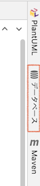
データベース ウィンドウで、 + > データソース（Data Sources）> H2 を選ぶ
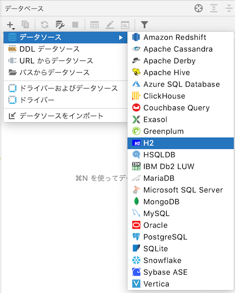
データソースおよびドライバー（Data Sources and Drivers）ウィンドウで、 ドライバー > H2 を選ぶ。
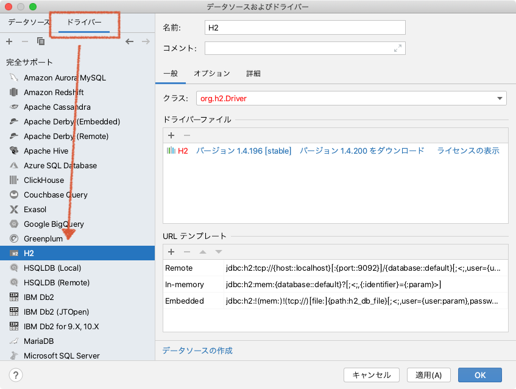
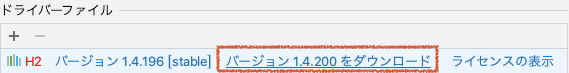
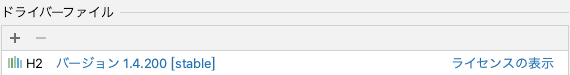
━━━━━━━━━ 当てはまる場合のみ ━━━━━━━━━
画面右側に データベース が出てこない場合
次の手順を試してください。
- SHIFTキーを2回押す
- 検索窓に database と入力する
- プラグイン: Database Tools and SQL が OFF になっていれば、 マウスで ON に切り替える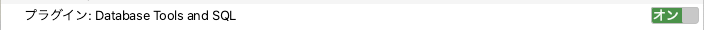
- IntelliJ IDEA を再起動して、もう一度最初の手順からを試す
データソースおよびドライバー（Data Sources and Drivers）ウィンドウで、左側の一覧から、 default@localhost を選ぶ。
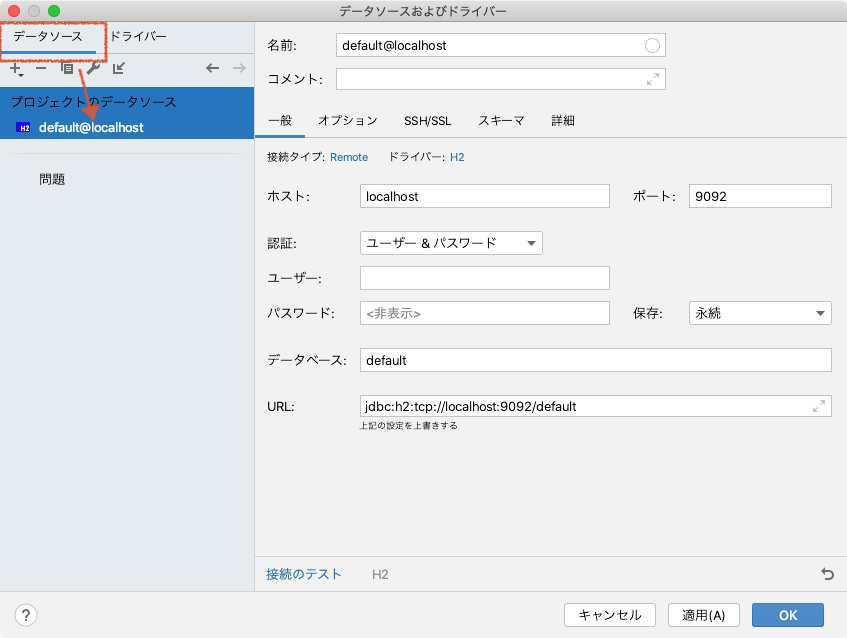
右側の入力欄を次の様に設定する。（指定した部分以外は自動的に設定される）
- ユーザー: あなたの学籍番号
- パスワード: あなたの学籍番号
- 保存: 再起動するまで(Until restart)
- URL:
jdbc:h2:~/h2db/softeng;AUTO_SERVER=TRUE;MODE=PostgreSQL
全て入力すると、次の様な画面になる。
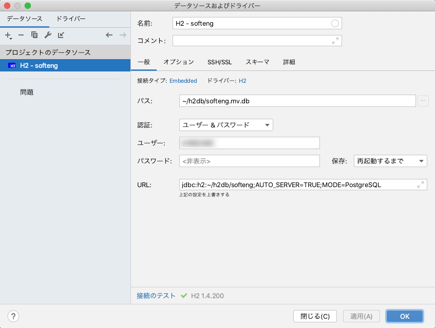
入力を完了したら、 適用 もしくは OK ボタンを押す。
データベースウィンドウに、 H2 - softeng が表示されるので、そのすぐ横の 1個中0個を表示 の欄をクリックする（灰色で見づらいので注意！）
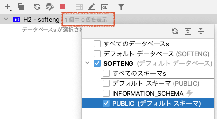
SOFTENG の中の PUBLIC（デフォルト スキーマ） を選択する。
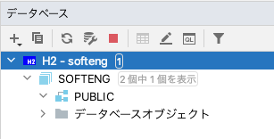
クエリコンソールの起動
データベースウィンドウの クエリコンソール のアイコンをクリック し、 コンソール（デフォルト） を選ぶ。
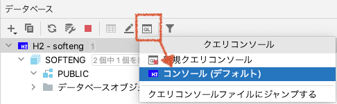
クエリコンソールが表示される。ここにSQLを記載すると、データベースへのクエリとして実行できる。
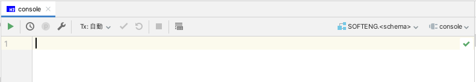
テーブル作成クエリの実行
テーブル作成クエリとして、 create table のSQLを実行する。
クエリコンソールに、以下のようにSQLを入力する。
Negative :ここもミスがあるとこの先の作業に影響するので、コピー&ペーストを推奨する。
-- もし、すでにデータベースがあれば削除する（間違った時用）
drop table if exists reminder_item;
-- テーブルを作成する
create table reminder_item (
user_id varchar(64),
push_at time,
push_text varchar(32)
);
このSQLは、以下の仕様で reminder_item テーブルを作るためのSQLである。
- 文字列型を64文字まで格納する
user_id列がある - time型を格納する
push_at列があるtime型は時間(例えば ‘13:30:00' のような形式) を格納するための型である
- 文字列型を32文字まで格納する
push_text列がある
入力したら、クエリコンソールの再生ボタン ▶︎ をおす。

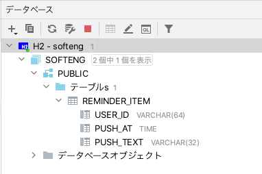
━━━━━━━━━ 当てはまる場合のみ ━━━━━━━━━
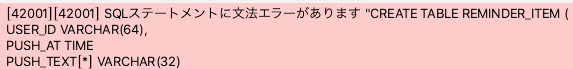
reminder_item テーブルに、データを入力する。
LINE Developers コンソールから、ユーザーIDをコピーする
LINE Developers コンソール で、LINEBotのチャンネルをクリックする。
チャンネル基本設定の下の方に表示されている あなたのユーザーID をコピーする。
ここでは、ABCDEFG... だと仮定する。
クエリコンソールから、SQLでデータを追加する
IntelliJ IDEAのクエリコンソールに、以下のようにSQLを入力する。
ABCDEFG... は、LINE Developers コンソール からコピーした、自分のユーザーIDに変更すること。
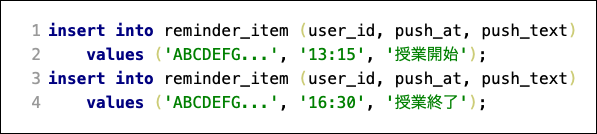
入力したら、クエリコンソールの再生ボタン ▶︎ をおす。
クエリコンソールから、SQLでデータを検索する
データの追加が成功していれば、以下のような組が reminder_item テーブルに追加されているはずである。
user_id | push_At | push_text |
ABCDEFG... | 13:15:00 | 授業開始 |
ABCDEFG... | 16:30:00 | 授業終了 |
これを、検索用のSQLを実行して確かめる。
IntelliJ IDEAのクエリコンソールに、以下のようにSQLを入力する。
入力したら、クエリコンソールの再生ボタン ▶︎ をおす。
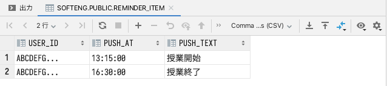